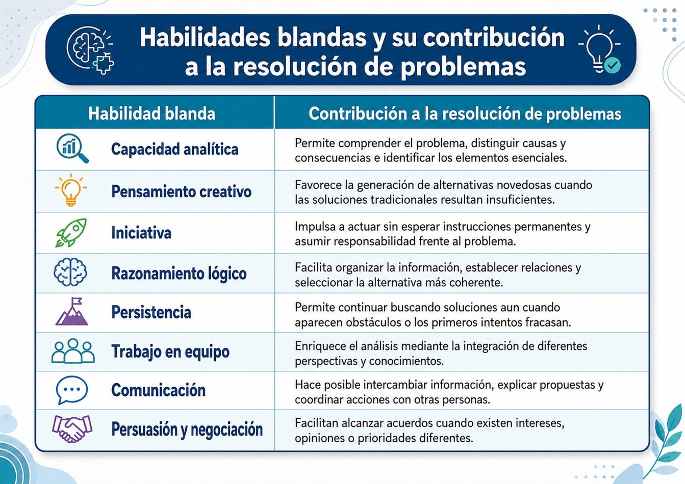
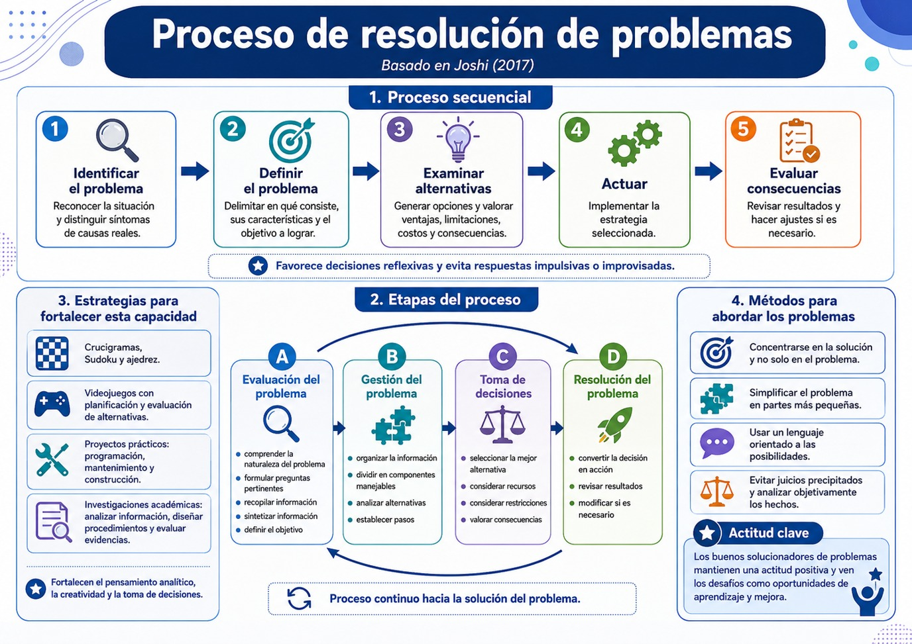

La resolución de problemas constituye una de las competencias transversales más importantes en tu formación universitaria y en el ejercicio profesional. Ninguna profesión está exenta de enfrentar situaciones inesperadas, conflictos, incertidumbre o decisiones complejas. Por ello, resolver problemas no consiste únicamente en aplicar conocimientos técnicos o habilidades duras, sino también en movilizar un conjunto de habilidades blandas que permiten analizar la situación, colaborar con otras personas, tomar decisiones informadas y actuar de manera responsable.
Manmohan Joshi, (2017), afirma que las habilidades blandas se presentan como un complemento indispensable de las habilidades técnicas. Mientras las habilidades duras permiten realizar tareas específicas propias de cada profesión, las habilidades blandas hacen posible utilizar esos conocimientos de forma eficaz en contextos reales, caracterizados por la interacción humana, la incertidumbre y el cambio constante, además señala que las organizaciones valoran estas competencias porque facilitan el trabajo colaborativo, la comunicación y el desempeño profesional en prácticamente cualquier ocupación.
La resolución de problemas como competencia profesional
Resolver un problema implica identificar una situación que impide alcanzar un objetivo y construir una estrategia para superarla. Los problemas pueden ser cotidianos, académicos o laborales; algunos son rutinarios y otros presentan un alto grado de complejidad. En todos los casos, la persona debe evaluar información, analizar alternativas, emitir juicios y seleccionar el curso de acción más conveniente. Joshi (2017), ejemplifica problemas frecuentes como reorganizar un proyecto atrasado, elaborar un argumento para un trabajo de investigación, depurar un programa informático o equilibrar un presupuesto. Por esta razón, la capacidad para resolver problemas es considerada una de las competencias más demandadas por las organizaciones contemporáneas. Las empresas esperan profesionales capaces de enfrentar desafíos sin depender permanentemente de instrucciones externas, demostrando autonomía intelectual y capacidad para tomar decisiones fundamentadas.
Habilidades blandas implicadas en la resolución de problemas
Joshi (2017), identifica diversas habilidades blandas que intervienen directamente en la resolución de problemas. Aunque pueden desarrollarse de manera independiente, en la práctica funcionan de forma integrada, observa la siguiente tabla:

Estas competencias muestran que resolver problemas no depende exclusivamente del conocimiento disciplinario. En numerosas ocasiones, la diferencia entre un profesional competente y otro sobresaliente radica precisamente en su capacidad para colaborar, escuchar, negociar y mantener una actitud perseverante frente a la incertidumbre.
El proceso de resolución de problemas
Joshi (2017), además propone un proceso secuencial que orienta la solución de cualquier problema. Este proceso puede aplicarse tanto a situaciones personales como académicas, organizacionales o comunitarias. Revisemos los pasos que implica este proceso:
- 1. Identificar el problema: consiste en reconocer que existe una situación que requiere intervención. Muchas veces los problemas se agravan porque se confunden los síntomas con las causas reales.
- 2. Definir el problema: delimitar claramente en qué consiste, cuáles son sus características y qué objetivos se desean alcanzar.
- 3. Examinar las alternativas: se generan distintas posibilidades de solución, evaluando ventajas, limitaciones, costos y consecuencias de cada una.
- 4. Actuar: después del análisis se implementa la estrategia seleccionada.
- 5. Evaluar las consecuencias: finalmente se revisan los resultados obtenidos para verificar si el problema fue resuelto o si es necesario introducir ajustes.
Este procedimiento favorece decisiones más reflexivas y evita respuestas impulsivas o improvisadas.
Las etapas del proceso:
1. Evaluación del problema
- Comprende actividades como:
- • comprender la naturaleza del problema;
- • formular preguntas pertinentes;
- • recopilar información;
- • sintetizar la información obtenida;
- • definir claramente el objetivo que se pretende alcanzar.
2. Gestión del problema
En esta fase la persona organiza la información disponible, divide el problema en componentes más manejables, analiza distintas alternativas y establece los pasos necesarios para avanzar.
3. Toma de decisiones
Consiste en seleccionar la mejor alternativa considerando los recursos disponibles, las restricciones existentes y las posibles consecuencias.
4. Resolución del problema
Finalmente, la decisión se convierte en acción y posteriormente se revisan los resultados para valorar si la estrategia implementada fue efectiva o requiere modificaciones. El diagrama del capítulo representa estas etapas como un proceso continuo que conduce progresivamente hacia la solución del problema.
Estrategias para fortalecer la capacidad de resolver problemas
El texto señala que esta competencia puede desarrollarse mediante la práctica constante. Algunas actividades recomendadas incluyen:
- • resolver crucigramas, Sudoku o jugar ajedrez;
- • participar en videojuegos que exijan planificación y evaluación de alternativas;
- • realizar proyectos prácticos como programación, mantenimiento de equipos o actividades de construcción;
- • desarrollar investigaciones académicas que impliquen analizar información, diseñar procedimientos y evaluar evidencias.
Estas actividades fortalecen tanto el pensamiento analítico como la creatividad y la capacidad para tomar decisiones.
Métodos para abordar los problemas
Además del procedimiento anterior, el libro propone varios principios prácticos para enfrentar situaciones problemáticas:
- • Concentrarse en la solución y no únicamente en el problema. Después de reconocer la dificultad, conviene orientar la atención hacia las posibles alternativas en lugar de permanecer buscando culpables.
- • Simplificar el problema. Descomponer una situación compleja en partes más pequeñas facilita comprenderla y encontrar soluciones viables.
- • Utilizar un lenguaje orientado a las posibilidades. Las expresiones positivas favorecen una actitud abierta al cambio y estimulan la creatividad.
- • Evitar los juicios precipitados. Analizar objetivamente los hechos permite comprender mejor la situación antes de emitir conclusiones.
Finalmente, el autor sostiene que los buenos solucionadores de problemas comparten una característica esencial: mantienen una actitud positiva frente a los desafíos y consideran los problemas como oportunidades de aprendizaje y mejora, en lugar de percibirlos únicamente como obstáculos.
El siguiente gráfico te explica el proceso:

Resolución de problemas desde el pensamiento complejo
En el contexto universitario y particularmente desde el enfoque del pensamiento complejo, resolver problemas implica reconocer que los fenómenos sociales rara vez tienen una única causa o una solución lineal. Las problemáticas contemporáneas como la violencia, el abandono escolar, el cambio climático o la desigualdad son sistemas complejos donde interactúan factores económicos, culturales, políticos, psicológicos y ambientales.
Por ello, la resolución de problemas exige integrar habilidades blandas como la comunicación, la empatía, la negociación, el trabajo colaborativo y el pensamiento crítico con capacidades cognitivas de análisis sistémico y argumentación. Una o un profesional formado bajo esta perspectiva no busca únicamente "resolver" un problema inmediato, sino comprender sus múltiples causas, anticipar las consecuencias de sus decisiones y construir soluciones sostenibles mediante el diálogo interdisciplinario y la colaboración con otros actores sociales. De esta manera, la resolución de problemas deja de ser una competencia exclusivamente técnica para convertirse en una práctica ética, reflexiva y orientada al bien común.
- Rondan-Zamata, Felicitas; Coa-Mamani, Rocío; Gonzales-Miranda, Jorge; Lozada-Miranda, María y Álvarez-Huari, María (2022). Inteligencias múltiples en estudiantes universitarios de ciencias de la salud. Ciencia Latina Revista Científica Multidisciplinar, 6(6), 1010-1022.
- De La Ossa, Jaime (2022). Habilidades blandas y ciencia. Revista colombiana Cienc Anim. Recia. enero-junio; 14(1): e945.
- Joshi, Manmohan (2017). Soft Skills, Manmohan Joshi & bookboon.com, ISBN 978-87-403-1905-7, 2017.
Te recomendamos ver estos videos para profundizar sobre este tema: